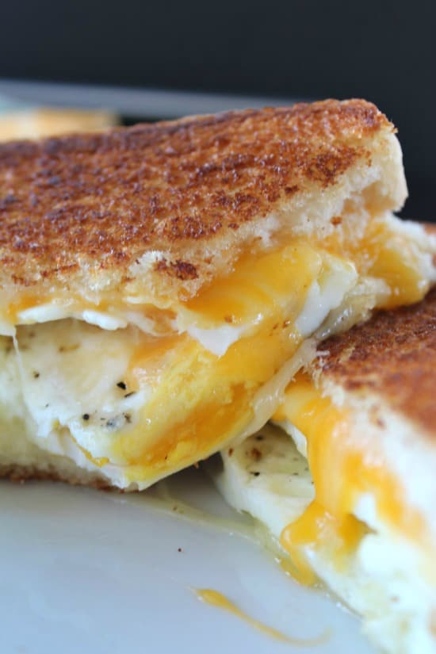

Egg and Cheese Breakfast Sandwich

Description
A simple breakfast sandwich my mother used to make. Great for days where you don't have a lot of energy to cook, but still want something warm and filling.
Ingredients
- 2 slices of bread
- 1-2 eggs
- 1-2 slices of your preferred cheese. (1 slice per egg)
- 1 tbsp butter
Steps
- Toast your bread.
- While your bread is toasting heat a pan with your butter over medium heat until melted. Crack your egg or eggs into the pan. Fry until your preferred done-ness.
- Add a slice of cheese on top of each egg. Add a few drops of water to the pan and cover with the lid for a few seconds to melt the cheese.
- Once cooked and melty, place eggs on your toasted bread, make into a sandwich, and enjoy!